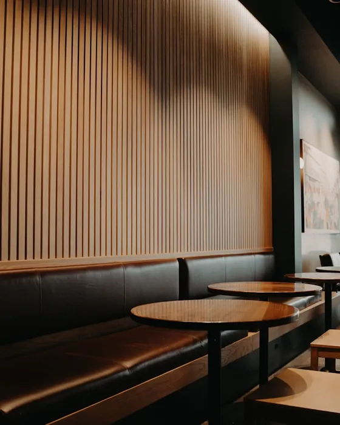
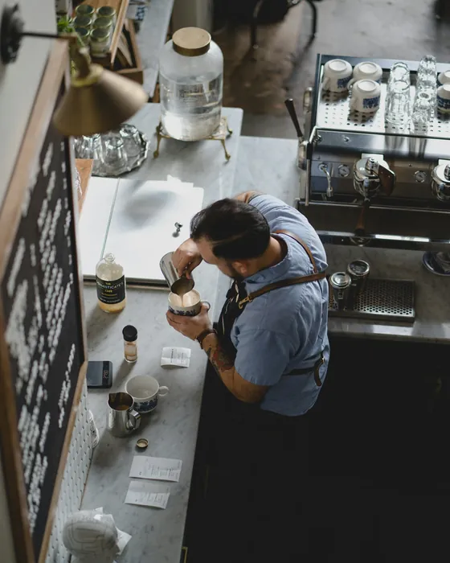
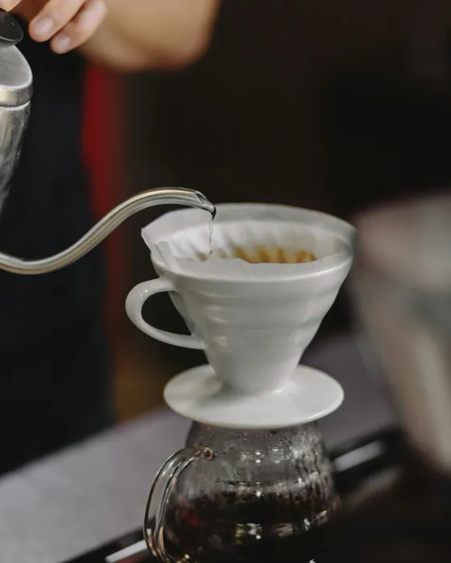

Coffeelon
остров · 4 этаж
Место, которое стоит найти
Сюда не заходят по пути. Сюда поднимаются — на четвёртый этаж Рамус Молла.
Как подняться
Три шага от улицы до стойки. Дальше — только выбрать напиток.
-
Зайдите в Рамус Молл
Торговый центр на улице Сююмбике, 7. Подойдёт любой вход — дальше ориентир один: лифты и эскалаторы в центре здания.
-
Поднимитесь на четвёртый
Это этаж кинотеатра Sun City — самый верхний. Если приехали на лифте и увидели афиши, вы на месте.
-
Ищите вывеску Coffeelon
Ориентир — столики фудкорта: кофейня стоит у них.
На первом этаже тоже есть Coffeelon — это островок навынос, у него свой стакан и своя очередь. Столики, фильтр и пуровер — только наверху.
Наверху тише
Зал небольшой, и в этом всё дело: на четвёртом не бывает толпы с первого этажа.



Что говорят гости
Брал на 4 этаже, потому что там столики есть. Можно посидеть и насладиться.
В фудкорте комфортные диванчики и не так шумно — зал не очень большой.
Я работаю барменом, и их кофе стал для меня образцом.
Отзывы с карточки на Яндекс.Картах, где их 178.
Прийти
- Адрес
- Нижнекамск, ул. Сююмбике, 7
Рамус Молл, 4 этаж
- Телефон
- +7 (932) 416-68-88
- Часы
- Ежедневно с 9:00 до 21:00